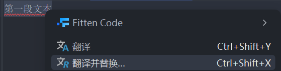
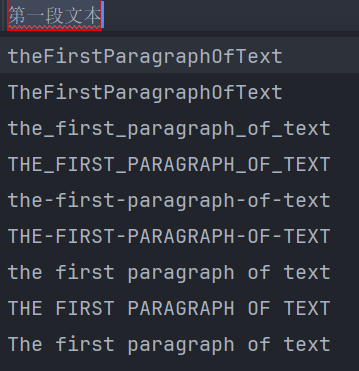

Translation
在编程过程中，我们需要给一些变量，函数，类等 等命名，但是有时候受到个人英语水平的限制，我们并 不知道他们的英文是什么。如果用翻译软件或者用浏览 器搜索还要切换软件，很是麻烦。Translation 插件这时可以给我们很大的帮助。
Translation 可以翻译并替换程序中的中文，并且转换成的英文有下划线，大驼峰，小驼峰和一些其他的格式，符合编程规范，非常方便。
使用也很简单，只要选中需要翻译的词，右键后点 击翻译并替换就行了
然后选择需要的格式
需要哪个点哪个，完美~